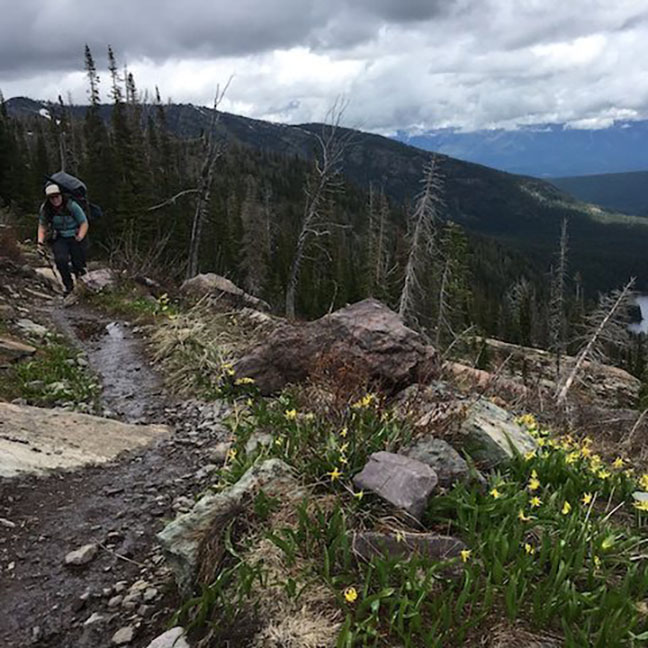

During July, I attempted backpacking into Turquoise lake in the Mission Mountains. Although the lake was snowed in still, it was a beautiful hike. We camped at a lower elevation lake instead. If you're interested in visiting this amazing place, check out Backpacker Magazine's article for more information and directions to the trailhead.

Return to the home page